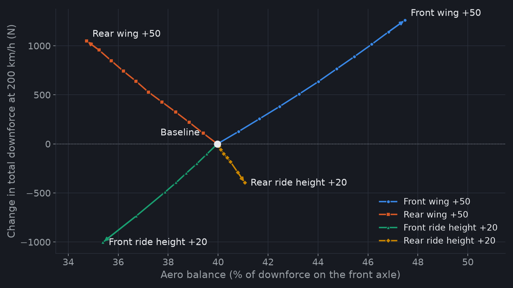
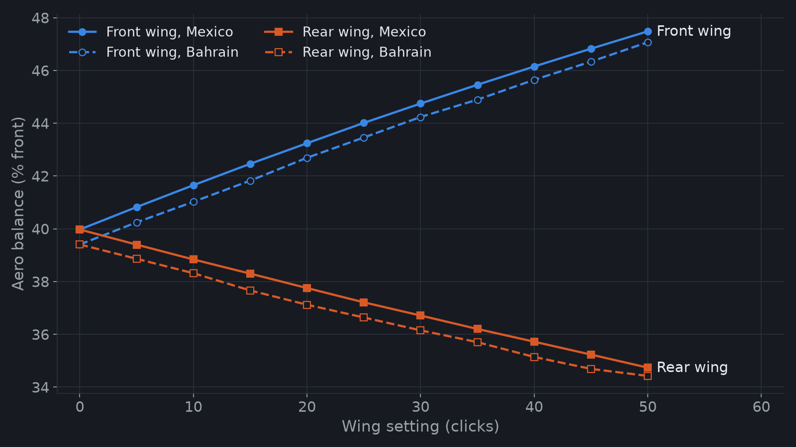
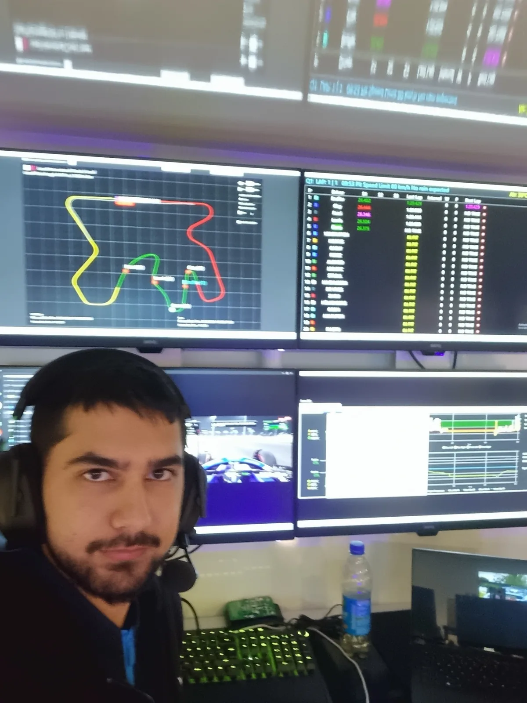
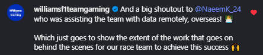

Motorsport · Atlassian Williams F1 Team Gaming · 2022–2026
Sim-Racing Performance Engineering
Volunteer performance engineer for the official Williams Racing esports team. I read telemetry and driver feedback, find where lap time is lost, and turn that into setup changes.
- P4 ×2Consecutive fourth-place finishes in the F1 Sim Racing Teams' Championship, against nine other teams
- 20+Circuits analysed for lap-time loss
- 4+ yrsWith the team, January 2022 to August 2026
- 2Disciplines: GTP endurance racing first, then the F1 game
What the role involves
- Lap-time analysis: comparing laps in MoTeC and the team's telemetry tools to find where time is lost, corner by corner.
- Driver feedback: structured debriefs on balance, rotation, braking and traction, checked against what the data shows.
- Setup changes: turning those findings into changes to the car, including spring and anti-roll-bar stiffness.
Example: building an aero map in F1 25
The game gives no aero data, so I measured it. On a long, smooth straight (Mexico City), the car runs at about 200 km/h to read the front and rear wheel loads, then coasts down in neutral to read the deceleration. A stationary reading gives the static loads, and a low-speed coast-down gives the rolling resistance. One setting changes per run.
CLA = (LF + LR) / ½ρV²
CDA = (M·g·Glong − Frolling) / ½ρV²
Aero balance = 100·LF / (LF + LR)
LF and LR are the front and rear aero loads (wheel load at speed minus static load). The method follows Segers, Analysis Techniques for Racecar Data Acquisition (SAE International, 2014), chapter 13.

| Change | Front load | Rear load | Aero balance | Drag (CDA) |
|---|---|---|---|---|
| Front wing, +10 clicks | +242 N | +11 N | +1.5 points | +2.6% |
| Rear wing, +10 clicks | −12 N | +222 N | −1.0 points | +4.0% |
| Front ride height, +1 mm | −42 N | −14 N | −0.27 points | −0.3% |
| Rear ride height, +1 mm | +6 N | −13 N | +0.12 points | +0.4% |
Ride heights are the measured (dynamic) values at speed. Raising one end of the car also moved the other, so I separated the two effects with a two-variable fit (R² above 0.99 for the loads and balance).
Using it for setup direction
To make the car rotate more in fast corners, the aero balance has to move forward. The map shows what each way of doing that costs:
- More front wing: +0.15 points per click. It costs about half the drag per unit of downforce of the rear wing, so it is the efficient choice.
- Lower front ride height: +0.27 points and +57 N of total downforce per mm, limited by how low the floor can run.
- Less rear wing: moves the balance forward but takes downforce off the rear, which costs traction.
- More rake (raising the rear): only +0.12 points per mm, while losing downforce and adding drag. In this game, rake is a poor balance tool.
Aero load scales with speed squared, so at 100 km/h it is a quarter of the 200 km/h figure. In slow corners, rotation comes mainly from the mechanical setup instead.
Checking the data

- Repeatable: the balance shift per click matched Mexico within 3% (front wing 0.150 against 0.153 points per click; rear wing 0.104 against 0.102).
- Offset explained: Bahrain sits about 0.57 points rearward. The ride-height fit from Mexico predicts 0.55 points from Bahrain's different ride heights.
- Noise: Bahrain's straight made the load readings about ten times noisier, which is why Mexico is the reference track.
- Limits: air density is fixed at 1.293 kg/m³ because the game does not model it, and the drag figure depends on the mass and rolling resistance used. So CLA and CDA are for comparing settings, not real-world values. Aero balance and the load changes do not depend on those assumptions.
Example: understeer in slow corners
The driver reported understeer in the slow corners. At low speed there is little aero load, so mechanical grip dominates and the anti-roll bars are the main tool. I stiffened the rear anti-roll bar by two clicks, close to the game's maximum. That makes the rear axle carry more of the roll moment, so more load moves from the inner to the outer rear tyre. Because tyre grip does not rise in proportion to load, the rear axle loses grip overall and the car rotates more. The expected cost is rear traction on exit.
Mφ,r = Kφr / (Kφf + Kφr) · msayh′
Fy,axle = 2Fz0(μ0 − kFz0) − 2kΔFz2
The total roll moment, msayh′, is set by sprung mass, lateral acceleration and centre-of-gravity height above the roll axis, so an anti-roll bar cannot change it. A stiffer rear bar raises the rear's share of roll stiffness, Kφr, so the rear axle reacts more of that moment. Modelling tyre grip as falling with load, μ = μ0 − kFz, the rear axle's total lateral force drops with the square of the load transfer, ΔFz. Less grip at the rear relative to the front means more rotation.
Result: minimum speed through the slow corners went up, and the throttle trace showed no noticeable traction problem on exit.
Pit wall bootcamp, 2023

From the team

About the data
Race telemetry and team setups stay confidential. The aero map above comes from my own controlled test runs in F1 25, not from race data.
Tools: MoTeC, team telemetry tools, Excel, Python (matplotlib), setup engineering
← All projects